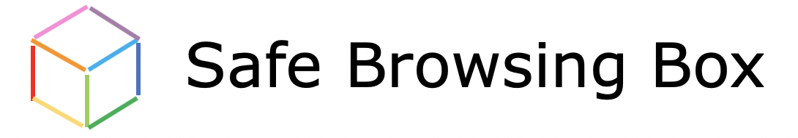

gap
Third-Party Tracking
Third-party tracking is when other sites collects information about your activty on this site while you browse. This can include the things you click on, how long you spend on different pages, and what you interact with.